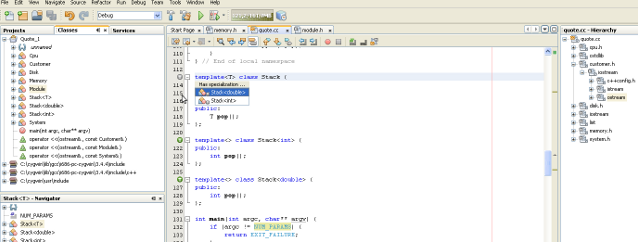
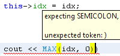

Для перехода к полноэкранному предварительному просмотру щелкните изображение
Разрабатывайте профессиональные приложения на языках C, C++ и Фортран для широкого спектра платформ, включая ОС Windows, Linux, OS X и Solaris.
IDE NetBeans включает типы проектов для C и C++ и соответствующие шаблоны проектов. Разработчик может работать с приложениями C/C++ с динамическими и статическими библиотеками, а также создавать их. Кроме того, возможно создание проектов C/C++ из существующего кода. Проекты на языках C/C++ также поддерживают файлы на языке Фортран и Ассемблер.
Теперь пользователи могут быстро создавать новые проекты с нуля, просто перетаскивая двоичный файл в среду IDE. Система проектов выполняет автоматический поиск исходных файлов, добавляет их в проект, настраивает помощник при работе с кодом и даже анализирует зависимости проекта. Пользователям также предоставляются более гибкие возможности настройки команды "Выполнить", что позволяет им выполнять запуск и отладку статических и динамических библиотек.
Редактор C и C++ тесно интегрирован с многорежимным отладчиком GNU gdb. Можно установить переменные, исключения, системные вызовы и точки останова для строк и функций с целью их просмотра в окне 'Точки останова'. Существует возможность проверки стека вызовов и локальных переменных, создания средств контроля, а также просмотра потоков выполнения. Кроме того, можно вычислить выбранное выражение путем наведения на него курсора и просмотра всплывающей подсказки. В окне "Дисассемблер" отображаются команды ассемблера для текущего файла исходного кода.
Добавленная поддержка структурной распечатки позволяет пользователям анализировать переменные с типами STL в удобной презентации в представлении 'Переменные' или 'Наблюдения'.
Окно "Вычисление выражений" позволяет вычислять любые пользовательские выражения в текущем контексте программы.
Используйте функцию усовершенствованного автозавершения и реорганизации кода C/C++ и Qt, которая включает в себя автозавершение и переход по командам и блокам препроцессора. Реорганизация возможна в редакторе, представлении "Классы" и в навигаторе. Используйте эти функции для изменения параметров метода и для создания кода инкапсуляции основного поля (ALT+INSERT). В комментариях и литералах доступна проверка правописания.
Редактор C и C++ |
Поддержка C++11 |
Модульное тестирование |
|
В редактор C/C++ включены выделение на основе синтаксического и семантического анализа, автоматическая вставка отступов в код и форматирование (включая выбор стилей форматирования), проверка соответствия скобок, функция свертывания кода, а также шаблоны. |
IDE NetBeans для C++ включает определенное количество функций, связанных с разработкой на C++11. Функции C++11 доступны в редакторе, помощнике при работе с кодом, навигации и системе проектов. |
Можно создавать и выполнять тесты C/C++ непосредственно в среде IDE. Результаты тестирования отображаются ясным, интуитивно понятным образом. |
Конфигурации компилятора |
Пакетирование |
Поддержка набора инструментальных средств Qt |
|
IDE NetBeans поддерживает несколько современных компиляторов, таких как компиляторы GNU, CLang/LLVM, Cygwin и MinGW от Oracle Solaris Studio. Существует возможность установки требуемого компилятора, определений препроцессора, параметров времени компиляции, языковые стандарты (например,, C++11) и т.д. |
При определенных настройках проект может автоматически пакетировать скомпилированные приложения в виде файлов TAR, ZIP, пакетов SVR4, RPM или Debian. |
Используйте инфраструктуру разработки приложений Qt для создания файлов Qt (например, форм с графическим пользовательским интерфейсом, ресурсами и переводами). Стандартные средства редактирования Qt (например Qt Designer для файлов формы и Qt Linguist для переводов) автоматически запускаются при необходимости. Свойства проекта Qt позволяют настроить созданный файл проекта qmake. |
Проверка исходного кода |
Удаленная разработка |
Переход по файлам |
|
Разработчики также могут просматривать иерархию наследования класса, иерархию элемента include в заголовках, иерархию типов и т.д. Окно классов позволяет осуществлять переходы по иерархии классов: можно просматривать все классы в проекте, а также элементы и поля каждого класса. В окне графа вызовов отображаются все функции, вызывающие выбранную функцию и вызываемые ею. Можно выбирать между графом прямых вызовов и графом обратных вызовов, а также менять представление графа. Кроме того, имеется представление расширения макросов, с помощью которого можно увидеть, как код будет выглядеть после препроцессора. Используйте аннотации Overrides/Is Overriden для перехода между родительскими и нижележащими классами. Также возможен переход между общим шаблоном и определениями шаблона с помощью соответствующих аннотаций. |
Средства разработки на удаленных узлах позволяют создавать, запускать и выполнять отладку проектов с клиентской системы так же просто, как в локальном режиме. Различные методы синхронизации с удаленным узлом обеспечивают необходимую надежность, производительность и простоту. Переходы внутри удаленной файловой системы теперь осуществляются просто и доступны там, где это логически предполагается. Просмотрите новую 'Удаленную панель инструментов' ('Вид' > 'Панели инструментов' > 'Удаленные'), позволяющие переключать узлы, открывать проекты из нее и создавать новые проекты на удаленном узле. |
Используйте действия 'Перейти к файлу', 'Перейти к типу' и 'Перейти к символу' для быстрого перехода к нужному элементу. Гиперссылки обеспечивают возможность переключения между использованием и объявлением любого элемента, к которому подведен курсор одним щелчком мыши. Кнопка 'Перейти к заголовку/источнику', доступная на панели инструментов редактора, позволяет быстро переключаться между файлами источника и файлами заголовка. Окно "Использование" отображает место исходного кода проекта, в котором используется класс (структура), функция, переменная, макрос, директива #include или файл. Также поддерживаются удаленные файловые системы. |
{kind=link}
{kind=link}